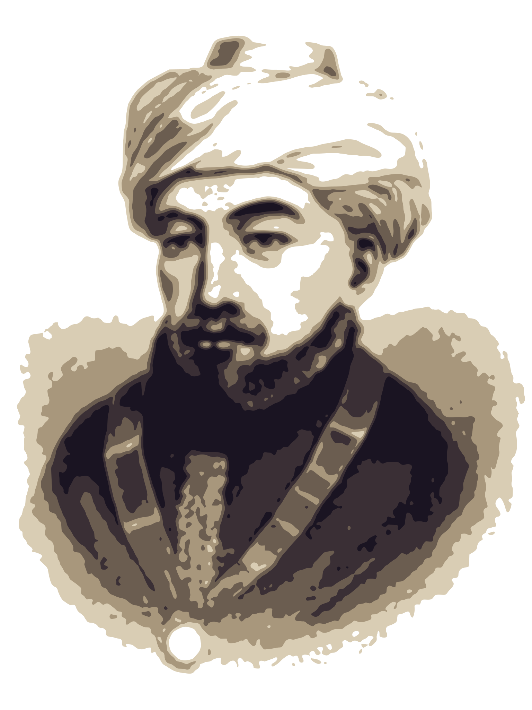

הרמב״ם
פסק:
פסק:
הצדקה הגדולה ביותר!

רבינו משה בן מימון זי״ע
״עני שהוא קרובו
קודם לכל אדם״
(מתנות עניים ז, יג)
קודם לכל אדם״
קופת ״עוד ישמע״ מחזקת את ידי המשפחה
בשעת השמחה״מיר זענען אלע א חלק פון די שמחה״
בשעת השמחה״מיר זענען אלע א חלק פון די שמחה״